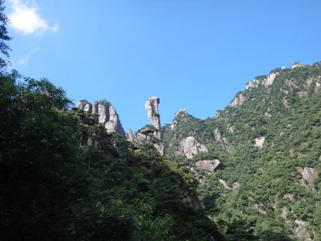
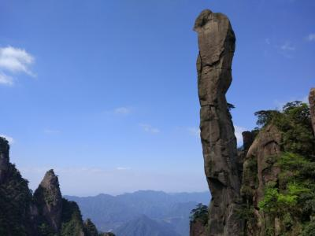
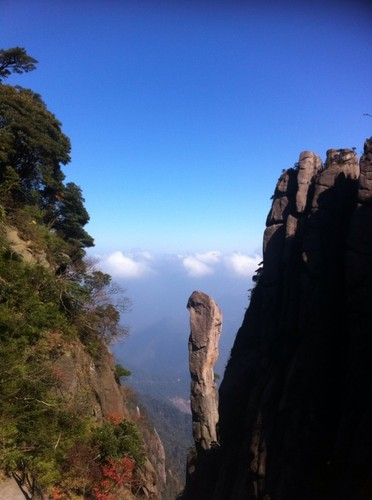

巨蟒出山是由风化和重力崩解作用而形成的巨型花岗岩石柱，峰身上有数道横断裂痕，但经过亿万年风雨，依然屹立不倒。顶部扁平，颈部稍细，最细处直径约7米，状极突兀，形似一硕大蟒蛇破山而出，直欲腾空而去；在海拔约1200米的深山幽谷中一瘦奇石峰横空出世，如擎天玉柱昂首屹立，扶摇直上，耸入云端。垂直高度128米，峰端略粗形似蟒头，峰腰纤细有若蛇身，云飞雾绕之时，蟒头窜动，蛇身微摇，形似一条巨大蟒龙，吞云吐雾，撼天动地，破地出山，昂然挺拔，直欲腾空冲天而去,令人叹为观止，唏嘘不已。
传说玉皇大帝有个妹妹，名叫玉虚仙女。玉虚生性活泼，她忍耐不住天宫的寂寞和哥哥的管束，一日，趁玉帝出巡之机，变为一个村姑私下凡尘游玩，出南天门见三清山气势巍峨，风光旖旎，山川秀丽，便按下云头，往玉台降落。因被美景吸引，无暇他顾，落地时不慎被树枝挂伤，鲜血点点洒落在枝叶上，后来，被玉虚仙女鲜血染红的大树就变成了三清山特有的高山杜鹃，每年五六月间，玉台周围的杜鹃林便盛开出艳红的花朵。
玉虚仙女负伤不起，躺在玉台上休息，正巧被一位上山采药的英俊小哥孟云龙相遇救起，背回家中养伤。几天的相处照顾，玉虚被小孟勤劳、朴实的阳刚气质所打动，决意留在人间与孟哥结为夫妻。
玉虚仙女私下凡尘并与孟哥结为连理的事被早已觊觎玉虚仙女美貌的乌龟精探知，便密告于玉帝，玉帝又气又恼，即派雷神、电母下凡将玉虚抓回天宫软禁，并要将玉虚许配给乌龟精以示惩罚。玉虚虽受尽折磨，但坚决不从。乌龟精相爱不成便生恨，趁孟哥上山寻妻之机，施行法术将孟哥变幻为一条巨蟒压于玉台之下的山谷，企图断了玉虚的念头。这孟哥化为巨蟒后，竟一往情深，忠贞不渝，奋然挣扎欲摆脱压迫在身上的羁绊破山冲天而去，于是留下了三清山的第二大标志性绝景---仰头望空宇，日日思爱妻的“巨蟒出山”峰。
再说玉虚得知夫君被害消息，痛不欲生，不顾一切冲出天庭，飞身降于孟哥身旁，誓死要与孟郎长相守，永相爱。
玉帝惊闻玉虚宁死不屈消息，后悔不己，急遣二郎神 杨戬带哮天犬下凡追寻。二郎神赶到三清山时，只听“轰隆”一声，玉虚已在巨蟒峰对面的锦衣山间化为一座维妙维肖的“女神”石峰，永远陪伴着至爱的情郎。二郎神被玉虚、孟哥忠贞不渝的爱情所感动，便留下了哮天犬在女神峰对面南侧的山头上为他们日夜守护。又摘下头上的金盔置于其旁，以示敬仰。三清山神感其爱，便在 女神峰、巨蟒峰的对面矗万石为笏，朝天禀告，旌表其忠烈。于是留下了“ 万笏朝天”、“ 天狗望月”、“金盔峰”的景观。乌龟精则以害人之罪被玉帝罚于女神峰背后的小山头之上，头朝女神面壁思过。玉虚的忠烈也感动了玉皇大帝，玉帝遂将她封为“司春女神”，掌管人间万物生机和爱情，让人间花常开，树常绿，五谷丰登，年年有春天；让有情人终成眷属，永远美满幸福。因此女神峰又被称为东方女神、中国爱神峰。